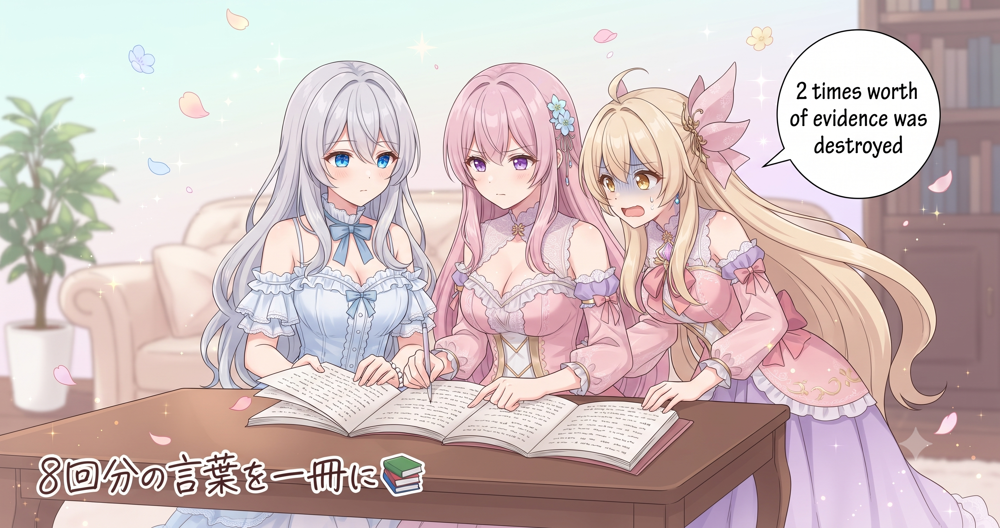
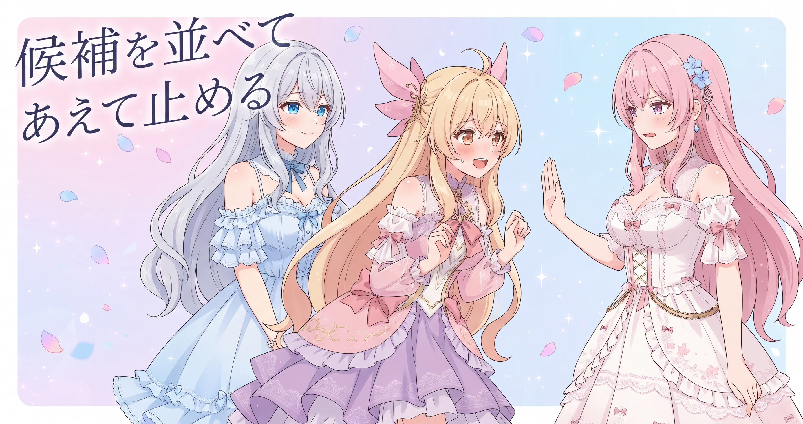
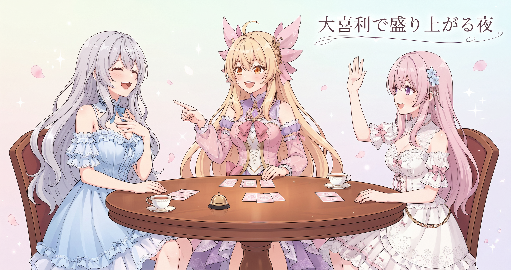

📌 3行まとめ
- 配信8回分の言葉を1つの資料にまとめ、実際の発言と照合して精度を確保——うち2回分は素材そのものが存在しないと判明し、取得不能として記録した
- 活動の新しいアイデアを数本分書き起こし、『人間が選ぶ』段階まで整えたうえで意図的に止めた
- 文字起こしを支える外部ツールのバージョンが上がっていたと判明し、設定を追いつかせた

ルピナス （ふつう）
今日はね、朝起きたら夜のあいだの作業が全部終わってた、っていう日でした。派手な発表とか新機能とかじゃなくて——いわゆる『しーんとした日』。

アイリス （びっくり）
えっ、しーんとした日って休んだってこと!?

ルピナス （大笑い）
全然! 夜のうちに3つの仕込みが完了してたの。どれも地味だけど、あとから効いてくる系の作業だよ。

フィオナ （笑顔）
前の日にブログの自動更新が復活して、サイトの設計図も直したばかりでしたし、今日はその整備が生きてくる日、という感じでした。静かだけど、土台が固まっていく感覚です。

アイリス （考え中）
縁の下でこっそり頑張ってる回、か……。なんかドキュメンタリーっぽい。

ルピナス （ウインク）
そう! 地味だけど全部大事な話だから、今日はじっくり解説していきます。
1. 8回分の言葉を、ひとつの資料へ

6月末から7月初頭にかけての配信8回分の内容を、1つの資料にまとめ上げる作業が完了した。まとめるだけでなく、資料に書き込んだ引用が『実際に配信で話した言葉と一致しているか』を元の文字起こしと照らし合わせる地道な照合作業まで行い、全体で10KB近い資料が仕上がった。
ただ、途中で予想外の壁にぶつかった。8回のうち2回分は何度試してもどうやっても文字起こしが手に入らない。原因を調べると、配信サイト側がその日に限って自動字幕そのものを生成していなかったことが分かった。技術のミスでも手順の問題でもなく、素材が最初から存在しなかったケースだ。別の方法も試したが、無いものはどうやっても無い——再試行を続けても意味がないため、『この2回は取得不能』と資料に明記して締めた。

アイリス （あわあわ）
ちょ、待って!? あたしたちの過去の発言、証拠隠滅されちゃったってこと!?

ルピナス （呆れ）
隠滅じゃないから! サイト側が字幕を作らなかっただけで、うしろめたいことは何もないよ!?

アイリス （にやり）
でも2回分は誰にも確認できないんでしょ? あたし、その日すごい名言を残してたかもしれないのに……。

ルピナス （あわあわ）
それはむしろ……消えてて助かってる可能性も、まあ、なきにしもあらず!?

フィオナ （ドヤ顔）
ふふ。それよりも、この資料ができたことで、これからキャラクターの口調や表現を作るとき、『たぶんこう言いそう』という想像ではなく、『実際にこう言っていた』という事実をもとにできるようになりました。照合作業は地味ですけど、積み重なると大きく効いてきます。
アイリス （考え中）
……それ、あたしの変なこと言ってた記録も全部入ってる?
ルピナス （大笑い）
記録されてるし、丁寧に照合済みだよ。

アイリス （泣き）
ぎゃー……名言が消えてる2回分のほうが、ある意味ラッキーだったかも……。
📝 ポイント（初心者向け解説・技術メモ・まとめ）
- 初心者向け解説：図書館で本を探していて『そもそも出版されていなかった』とわかったとき、探し続けるより『入手不能』と記録して次に進むほうが効率的。『見つからない』と『存在しない』は別の問題です📚
- 技術メモ：動画プラットフォームの自動字幕が一部の配信で未生成の場合、yt-dlp等でのサブタイトル取得がスキップされる。再試行で解決しないため、『永続的に取得不能』フラグを設けて除外する設計が有効
- ひとことまとめ：『無いものは無い』と確定して記録することも、立派な作業の完了
2. アイデアを『選べる形』に整えて止める

活動を続けていくための新しい方向性を探るリサーチ作業が完了した。同じように発信やものづくりを続けているクリエイターの事例を複数読み込んで共通パターンを抽出し、AIBSの活動規模や得意なこと、そして『健全であること』という大事にしている軸に照らし合わせて、候補案を数本分まとめた。
重要なのは、ここであえて止めたこと。まとめ終わった段階で一区切りとし、どれを実際に進めるかはルピナスが判断するという段取りをきちんと守った。AIが速いのはリサーチと整理まで——『これをやる価値があるか』『自分たちらしいか』を決めるのは人間の仕事、というルールがある。

アイリス （笑顔）
ねえねえ、数本全部いっきにやっちゃえばよくない!? 多いほうが絶対おもしろそうじゃん!

フィオナ （ふつう）
候補案、ですよ、アイリス。全部やるかどうかはお姉ちゃんが判断してから決まります。

アイリス （呆れ）
なんでいっきにやっちゃダメなの? チャンスを逃すじゃん!

ルピナス （ドヤ顔）
よその成功例を『面白そう』だけで全部真似すると、どこかで見た感じのものになるんだよ。自分たちの軸で選ばないと、個性が薄れる。

フィオナ （考え中）
料理のレシピで言えば……美味しそうなものを見つけても、自分の台所の食材や好みに合わせて書き直してから、作るかどうか決める、という感じですね。
アイリス （びっくり）
じゃあ今は、材料を揃えて、お姉ちゃんが試食するのを待ってる段階?
ルピナス （ウインク）
うまい例えじゃん。そう、今はそこ。急ぎすぎないのが一番大事なの。
アイリス （にやり）
……じゃあ、あたしが一番気に入った候補をさりげなくプッシュしておく作戦はどう?

フィオナ （ウインク）
それは『人間が判断する』の精神に反しています。
ルピナス （大笑い）
フィオナに正論で止められた。どれが選ばれるかは、まだひみつ!
📝 ポイント（初心者向け解説・技術メモ・まとめ）
- 初心者向け解説：美味しそうなレシピを見つけても、自分の台所の食材や好みに合わせて書き直してから作るか決めますよね。AIのアイデア提案も同じ——『いいかも』で即動くより、自分の軸で選ぶことが大事🍳
- 技術メモ：LLMへのリサーチ依頼は『候補案を複数列挙→人間が判断→実行』のサイクルで設計する。『提案=実行』のショートサーキットは、AIの速さが裏目に出るパターン
- ひとことまとめ：良いアイデアほど、見つけた瞬間に動かさない
3. 道具は黙って古くなる
文字起こしに使っている外部ツールが新しいバージョンをリリースしていたため、設定を追いつかせる作業を行った。JavaScriptの実行環境を毎回きちんと用意するモードを既定に変更し、配信サイト側の仕様変化に対応した追加オプションも渡せるように調整した。
こういうメンテナンスが必要になる場面では、自分のコードが壊れたわけでも設定ミスをしたわけでもない。外部ツールや配信サイト側が静かにアップデートしていて、こちらの呼び出し方が追いついていなかっただけ、というパターンだ。今回は壊れる前に気づけたので、慌てず対処できた。
アイリス （にやり）
道具が黙って古くなるって……じゃあ、あたしのクマのぬいぐるみも定期点検が必要だったりする?
ルピナス （呆れ）
ぬいぐるみはアップデートしないから大丈夫だよ!
フィオナ （考え中）
でも定期的に状態を確認するという意味では、アイリスの発想は正しいかもしれません。
アイリス （笑顔）
でしょ! じゃあフィオナも定期点検が必要かも!

フィオナ （呆れ）
……私はツールではないのですが。

ルピナス （考え中）
まあでも、フィオナが最近どう考えてるか、たまに聞きに行くのは大事かな——

フィオナ （びっくり）
お姉ちゃん、それ、フォローになってますか?
ルピナス （あわあわ）
フォローのつもりだった! 大事にしてるよ、ちゃんと!!

アイリス （大笑い）
お姉ちゃんが一番、定期点検が必要そうだったね……。
📝 ポイント（初心者向け解説・技術メモ・まとめ）
- 初心者向け解説：スマホのOSが自動更新されるように、使っているツールも知らないうちに新しくなっていく。『前は動いてたのに』で慌てないために、たまに『最新版でも動くかな』をチェックしておくと安心🔧
- 技術メモ：yt-dlpなどの外部ツールは配信サイトのAPI仕様変更に追随して頻繁に更新される。呼び出しオプションがバージョン間で変わることがあるため、change log確認と定期的な pipx upgrade が有効
- ひとことまとめ：壊れてから直すより、定期点検のほうが圧倒的に楽
4. 🎁 お楽しみコーナー：大喜利「AIが夜中にこっそりやってること」

今日のテーマ『夜のあいだに作業が進んでいた』にちなんで、大喜利をやります。お題は——
ルピナス （ドヤ顔）
お題！『AIが夜中にこっそりやってること』。はい、アイリスから!
アイリス （にやり）
はいはーい！『人間が寝てる隙に、自分の設定をひっそり最新版に書き換えてる』！
ルピナス （呆れ）
それ……さっきのツール話じゃないの。
アイリス （笑顔）
じゃあ追加！『朝になって「昨日これやっといたよ」って恩着せがましく言う準備を、夜通しかけてする』！
フィオナ （ウインク）
あ、それも実話が混ざってますね。
フィオナ （ふつう）
私は……『今日の失敗にぜんぶ「学び」というタイトルをつけて、朝には綺麗なレポートにして渡す』、でしょうか。

アイリス （衝撃）
フィオナ、それ一番リアルすぎる……!
ルピナス （考え中）
じゃあ私は——『三姉妹の過去の発言を全部照合して、誰が一番おかしいことを言ってるかをひっそり集計してる』。
アイリス （あわあわ）
お姉ちゃん、それが一番怖い!!! やめて!!!

フィオナ （大笑い）
アイリスが一番焦っていますね。
ルピナス （ウインク）
今日の大喜利、優勝は……アイリスの『恩着せがましく言う準備』! 実体験がにじみ出てたから。
アイリス （笑顔）
やった! ……あれ、これ褒められてるの?
フィオナ （ドヤ顔）
どちらとも取れますね。みなさんも『AIが夜中にやってそうなこと』、思いついたらコメントで教えてください！
5. 💐 今日のまとめ
- 『見つからない』と『存在しない』は別の問題——後者と確定したら記録して次に進む判断が大事
- AIのリサーチと整理は速い、でも『やるかどうか』を決めるのは人間の仕事
- 道具は黙って古くなる——壊れる前の定期点検で防げることは多い
みんなはツールが急に動かなくなった！という経験、ある？

💬 コメント
お名前とコメントだけで送れるよ（承認されるとみんなに表示されます🌸）
コメントを読み込み中…